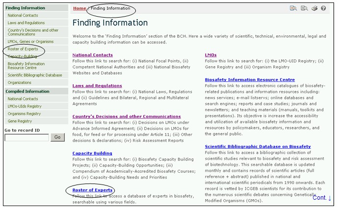
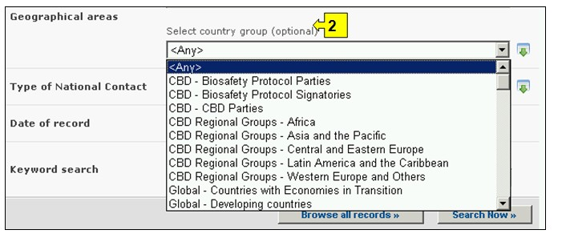
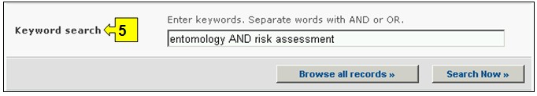

URL: http://bch.cbd.int/database/experts/
专家名册制度由生物多样性公约缔约方大会在议定书获得通过时建立（见第EM-I/3号决定）。专家名册的目的是酌情并根据要求向发展中国家和经济转型期国家开展与改性活生物体越境转移有关的风险评估、做出知情决定、开发国家人力资源并促进加强机构能力提供咨询意见和其他支持。
缔约方大会作为议定书缔约方会议是议定书的治理机构，大会决定由生物安全信息交换所负责维护获取专家名册的有关工作，在信息交换所上提供专家名册提名表，缔约方可提名专家。在议定书页面下的报告部分可获得专家名册数据库报告和自愿基金报告。模块03中对如何获取这些报告作了说明。
通过导航工具条上的查询信息下拉菜单上的链接、或通过查询信息页面左侧菜单中的链接或同一页面上关于专家名册文字中的链接可进入搜索专家名册数据库界面。这些链接将用户带入搜索专家名册页面，在该页面中用户可搜索各国政府提名的生物安全专家。

图 57

图 58
在本数据库中用户可搜索各国政府提名的生物安全专家。
在本数据库中提供了五个搜索标准框，用于对搜索进行限定。每一个搜索标准框均有一个下拉式菜单，用于选择所需的标准。每一个下拉菜单的缺省设置是菜单列表顶端的第一个选项。在每一个方框的右侧有一个按钮，使用户可以启动多重选择。一旦进入多重选择模式，可在按住Ctrl（控制）键的同时点击有关标准从而在选择中添加更多标准。
方框1[选择一个国家]在下拉菜单中列出了所有国家名，以便用户选择一个或多个具体国家进行搜索。

图 59
方框2[选择国家集团]在下拉菜单中列出了国家集团名，用户可选择一个或多个具体的国家集团进行搜索。国际集团清单包含所有主要的地理或政治国家集团，可将搜索范围限定在只由选定的集团成员提交的纪录条。

图 60
方框3[专家]用户可运用过滤器，根据专家的姓名、国籍或提名国家进一步将搜索限定在与所选定的具体标准有关的记录条范围。
在下拉菜单中选择一个或两个过滤器标准会打开更多具有下拉菜单式选项的搜索方框，与所选的过滤器分别对应。可添加多重过滤器，方法是使用Ctrl （控制）键（即在按下Ctrl （控制）键的同时点击有关过滤器标准）。

图 61
方框4[记录日期]允许用户根据数据纪录条在生物安全信息交换所登记的日期限定搜索范围。下拉菜单提供了若干个选项，可将搜索限定在某一选定时间间隔（如前一天、上个月、去年等）内提交的纪录条。

图 62
方框5[关键词搜索]可使用关键词缩小搜索范围。用户可使用标准关键词句法（结合使用“和/或”）搜索多个词或词的核心部分（如“进口或出口”）。使用关键词进行的搜索结果只显示含有与被搜索文字完全一样的纪录条而不会包含未输入的同义词（例如，只用一个关键词“Maize”(玉米)进行搜索的结果包括含有“Maize”的纪录条而不包括含有“Corn”或”Zea mays”（玉米同义词）的纪录条。

图 63
搜索页提供了三个按键用于生成查询结果。 键（搜索界面的顶端和底部均有）使用户根据在搜索功能方框中选择的搜索标准启动搜索。搜索结果缺省设置为根据国家名字母顺序排列。 (位于搜索界面的底部)使用户可获得本数据库中所有记录条的列表。

图 64
搜索结果 页位于纪录条上方，具有对搜索结果进行排列的功能。这可用于根据具体信息类型特有的标准对纪录条进行排列。注意当用户选择不同的搜索标准时，排列标准也随之变化。

图 65
示例：用户希望查找来自欧洲并具有林业和风险评估经验的专家。用户（一）在地理区域、国家集团方框中选择欧亚 – 欧洲（所有国家），（二）在关键词方框中键入林业和风险评估。
点击 键调出搜索结果。搜索结果显示为纪录条清单，根据国家分组。可通过选择专家姓名打开纪录条，查看每一位专家的详细信息。

图 66

图 67